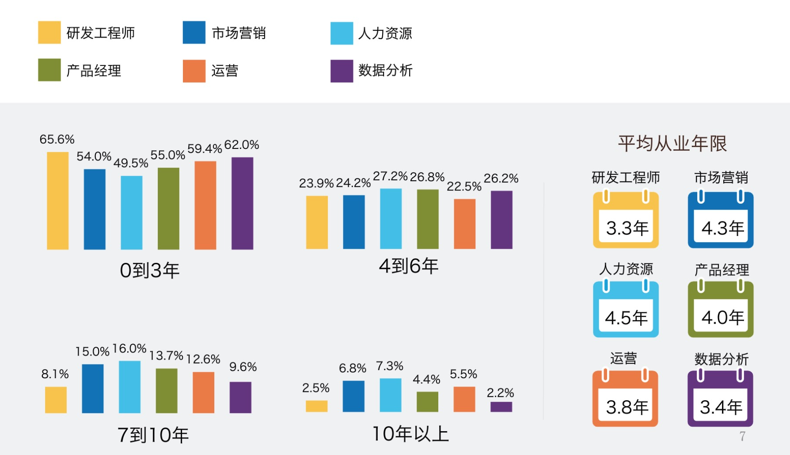

<!DOCTYPE HTML>
<html lang="en" >
    
    <head>
        
        <meta charset="UTF-8">
        <meta http-equiv="X-UA-Compatible" content="IE=edge" />
        <title>数据分析 | Linkedln：2016年中国互联网最热职位人才库报告</title>
        <meta content="text/html; charset=utf-8" http-equiv="Content-Type">
        <meta name="description" content="">
        <meta name="generator" content="GitBook 2.6.7">
        
        
        <meta name="HandheldFriendly" content="true"/>
        <meta name="viewport" content="width=device-width, initial-scale=1, user-scalable=no">
        <meta name="apple-mobile-web-app-capable" content="yes">
        <meta name="apple-mobile-web-app-status-bar-style" content="black">
        <link rel="apple-touch-icon-precomposed" sizes="152x152" href="gitbook/images/apple-touch-icon-precomposed-152.png">
        <link rel="shortcut icon" href="gitbook/images/favicon.ico" type="image/x-icon">
        
    <link rel="stylesheet" href="gitbook/style.css">
    
        
        <link rel="stylesheet" href="gitbook/plugins/gitbook-plugin-highlight/website.css">
        
    
        
        <link rel="stylesheet" href="gitbook/plugins/gitbook-plugin-search/search.css">
        
    
        
        <link rel="stylesheet" href="gitbook/plugins/gitbook-plugin-fontsettings/website.css">
        
    
    

        
    
    
    <link rel="next" href="./part01/1_数据分析概述.html" />
    
    

        
    </head>
    <body>
        
        
    <div class="book"
        data-level="0"
        data-chapter-title="数据分析"
        data-filepath="README.md"
        data-basepath="."
        data-revision="Thu Dec 14 2017 23:24:20 GMT+0800 (CST)"
        data-innerlanguage="">
    

<div class="book-summary">
    <nav role="navigation">
        <ul class="summary">
            
            
            
            

            

            
    
        <li class="chapter active" data-level="0" data-path="index.html">
            
                
                    <a href="./index.html">
                
                        <i class="fa fa-check"></i>
                        
                        数据分析
                    </a>
            
            
        </li>
    
        <li class="chapter " data-level="1" data-path="part01/1_数据分析概述.html">
            
                
                    <a href="./part01/1_数据分析概述.html">
                
                        <i class="fa fa-check"></i>
                        
                            <b>1.</b>
                        
                        数据分析概述
                    </a>
            
            
            <ul class="articles">
                
    
        <li class="chapter " data-level="1.1" data-path="part01/1.1_Python数据分析.html">
            
                
                    <a href="./part01/1.1_Python数据分析.html">
                
                        <i class="fa fa-check"></i>
                        
                            <b>1.1.</b>
                        
                        Python数据分析
                    </a>
            
            
        </li>
    
        <li class="chapter " data-level="1.2" data-path="part01/1.2_jupyper_notebook.html">
            
                
                    <a href="./part01/1.2_jupyper_notebook.html">
                
                        <i class="fa fa-check"></i>
                        
                            <b>1.2.</b>
                        
                        jupyter notebook
                    </a>
            
            
        </li>
    

            </ul>
            
        </li>
    
        <li class="chapter " data-level="2" data-path="part02/2_Numpy.html">
            
                
                    <a href="./part02/2_Numpy.html">
                
                        <i class="fa fa-check"></i>
                        
                            <b>2.</b>
                        
                        Numpy
                    </a>
            
            
            <ul class="articles">
                
    
        <li class="chapter " data-level="2.1" data-path="part02/2.1_创建数组.html">
            
                
                    <a href="./part02/2.1_创建数组.html">
                
                        <i class="fa fa-check"></i>
                        
                            <b>2.1.</b>
                        
                        创建数组
                    </a>
            
            
        </li>
    
        <li class="chapter " data-level="2.2" data-path="part02/2.2_数据类型.html">
            
                
                    <a href="./part02/2.2_数据类型.html">
                
                        <i class="fa fa-check"></i>
                        
                            <b>2.2.</b>
                        
                        数据类型
                    </a>
            
            
        </li>
    
        <li class="chapter " data-level="2.3" data-path="part02/2.3_数组运算.html">
            
                
                    <a href="./part02/2.3_数组运算.html">
                
                        <i class="fa fa-check"></i>
                        
                            <b>2.3.</b>
                        
                        数组运算
                    </a>
            
            
        </li>
    
        <li class="chapter " data-level="2.4" data-path="part02/2.4_数组索引和切片.html">
            
                
                    <a href="./part02/2.4_数组索引和切片.html">
                
                        <i class="fa fa-check"></i>
                        
                            <b>2.4.</b>
                        
                        数组索引和切片
                    </a>
            
            
        </li>
    
        <li class="chapter " data-level="2.5" data-path="part02/2.5_数组函数.html">
            
                
                    <a href="./part02/2.5_数组函数.html">
                
                        <i class="fa fa-check"></i>
                        
                            <b>2.5.</b>
                        
                        数组函数
                    </a>
            
            
            <ul class="articles">
                
    
        <li class="chapter " data-level="2.5.1" data-path="part02/2.5.1_通用元素级数组函数.html">
            
                
                    <a href="./part02/2.5.1_通用元素级数组函数.html">
                
                        <i class="fa fa-check"></i>
                        
                            <b>2.5.1.</b>
                        
                        通用元素级数组函数
                    </a>
            
            
        </li>
    
        <li class="chapter " data-level="2.5.2" data-path="part02/2.5.2_数组统计函数.html">
            
                
                    <a href="./part02/2.5.2_数组统计函数.html">
                
                        <i class="fa fa-check"></i>
                        
                            <b>2.5.2.</b>
                        
                        数组统计函数
                    </a>
            
            
        </li>
    
        <li class="chapter " data-level="2.5.3" data-path="part02/2.5.3_all和any函数.html">
            
                
                    <a href="./part02/2.5.3_all和any函数.html">
                
                        <i class="fa fa-check"></i>
                        
                            <b>2.5.3.</b>
                        
                        all和any函数
                    </a>
            
            
        </li>
    
        <li class="chapter " data-level="2.5.4" data-path="part02/2.5.4_添加和删除函数.html">
            
                
                    <a href="./part02/2.5.4_添加和删除函数.html">
                
                        <i class="fa fa-check"></i>
                        
                            <b>2.5.4.</b>
                        
                        添加和删除函数
                    </a>
            
            
        </li>
    
        <li class="chapter " data-level="2.5.5" data-path="part02/2.5.5_唯一化和集合函数.html">
            
                
                    <a href="./part02/2.5.5_唯一化和集合函数.html">
                
                        <i class="fa fa-check"></i>
                        
                            <b>2.5.5.</b>
                        
                        唯一化和集合函数
                    </a>
            
            
        </li>
    
        <li class="chapter " data-level="2.5.6" data-path="part02/2.5.6_随机数生成函数.html">
            
                
                    <a href="./part02/2.5.6_随机数生成函数.html">
                
                        <i class="fa fa-check"></i>
                        
                            <b>2.5.6.</b>
                        
                        随机数生成函数
                    </a>
            
            
        </li>
    
        <li class="chapter " data-level="2.5.7" data-path="part02/2.5.7_数组排序函数.html">
            
                
                    <a href="./part02/2.5.7_数组排序函数.html">
                
                        <i class="fa fa-check"></i>
                        
                            <b>2.5.7.</b>
                        
                        数组排序函数
                    </a>
            
            
        </li>
    

            </ul>
            
        </li>
    
        <li class="chapter " data-level="2.6" data-path="part02/2.6_数组文件输入输出.html">
            
                
                    <a href="./part02/2.6_数组文件输入输出.html">
                
                        <i class="fa fa-check"></i>
                        
                            <b>2.6.</b>
                        
                        数组文件输入输出
                    </a>
            
            
            <ul class="articles">
                
    
        <li class="chapter " data-level="2.6.1" data-path="part02/2.6.1_数组输入和输出.html">
            
                
                    <a href="./part02/2.6.1_数组输入和输出.html">
                
                        <i class="fa fa-check"></i>
                        
                            <b>2.6.1.</b>
                        
                        数组输入和输出
                    </a>
            
            
        </li>
    
        <li class="chapter " data-level="2.6.2" data-path="part02/2.6.2_读写文本文件.html">
            
                
                    <a href="./part02/2.6.2_读写文本文件.html">
                
                        <i class="fa fa-check"></i>
                        
                            <b>2.6.2.</b>
                        
                        读写文本文件
                    </a>
            
            
        </li>
    

            </ul>
            
        </li>
    
        <li class="chapter " data-level="2.7" data-path="part02/2.7_案例_亚洲国家人口数据计算.html">
            
                
                    <a href="./part02/2.7_案例_亚洲国家人口数据计算.html">
                
                        <i class="fa fa-check"></i>
                        
                            <b>2.7.</b>
                        
                        案例_亚洲国家人口数据
                    </a>
            
            
        </li>
    

            </ul>
            
        </li>
    
        <li class="chapter " data-level="3" data-path="part03/3_Pandas.html">
            
                
                    <a href="./part03/3_Pandas.html">
                
                        <i class="fa fa-check"></i>
                        
                            <b>3.</b>
                        
                        Pandas
                    </a>
            
            
            <ul class="articles">
                
    
        <li class="chapter " data-level="3.1" data-path="part03/3.1_Series.html">
            
                
                    <a href="./part03/3.1_Series.html">
                
                        <i class="fa fa-check"></i>
                        
                            <b>3.1.</b>
                        
                        Series
                    </a>
            
            
            <ul class="articles">
                
    
        <li class="chapter " data-level="3.1.1" data-path="part03/3.1.1_Series创建.html">
            
                
                    <a href="./part03/3.1.1_Series创建.html">
                
                        <i class="fa fa-check"></i>
                        
                            <b>3.1.1.</b>
                        
                        Series创建
                    </a>
            
            
        </li>
    
        <li class="chapter " data-level="3.1.2" data-path="part03/3.1.2_Series操作.html">
            
                
                    <a href="./part03/3.1.2_Series操作.html">
                
                        <i class="fa fa-check"></i>
                        
                            <b>3.1.2.</b>
                        
                        Series操作
                    </a>
            
            
        </li>
    
        <li class="chapter " data-level="3.1.3" data-path="part03/3.1.3_了解NaN.html">
            
                
                    <a href="./part03/3.1.3_了解NaN.html">
                
                        <i class="fa fa-check"></i>
                        
                            <b>3.1.3.</b>
                        
                        了解NaN
                    </a>
            
            
        </li>
    

            </ul>
            
        </li>
    
        <li class="chapter " data-level="3.2" data-path="part03/3.2_DataFrame.html">
            
                
                    <a href="./part03/3.2_DataFrame.html">
                
                        <i class="fa fa-check"></i>
                        
                            <b>3.2.</b>
                        
                        DataFrame
                    </a>
            
            
            <ul class="articles">
                
    
        <li class="chapter " data-level="3.2.1" data-path="part03/3.2.1_DataFrame创建.html">
            
                
                    <a href="./part03/3.2.1_DataFrame创建.html">
                
                        <i class="fa fa-check"></i>
                        
                            <b>3.2.1.</b>
                        
                        创建对象
                    </a>
            
            
        </li>
    
        <li class="chapter " data-level="3.2.2" data-path="part03/3.2.2_DataFrame操作.html">
            
                
                    <a href="./part03/3.2.2_DataFrame操作.html">
                
                        <i class="fa fa-check"></i>
                        
                            <b>3.2.2.</b>
                        
                        数据操作
                    </a>
            
            
        </li>
    
        <li class="chapter " data-level="3.2.3" data-path="part03/3.2.3_算数运算和数据对齐.html">
            
                
                    <a href="./part03/3.2.3_算数运算和数据对齐.html">
                
                        <i class="fa fa-check"></i>
                        
                            <b>3.2.3.</b>
                        
                        算数运算和数据对齐
                    </a>
            
            
        </li>
    
        <li class="chapter " data-level="3.2.4" data-path="part03/3.2.4_函数应用-apply函数.html">
            
                
                    <a href="./part03/3.2.4_函数应用-apply函数.html">
                
                        <i class="fa fa-check"></i>
                        
                            <b>3.2.4.</b>
                        
                        函数应用和映射了解NaN
                    </a>
            
            
        </li>
    
        <li class="chapter " data-level="3.2.5" data-path="part03/3.2.5_Pandas排序.html">
            
                
                    <a href="./part03/3.2.5_Pandas排序.html">
                
                        <i class="fa fa-check"></i>
                        
                            <b>3.2.5.</b>
                        
                        Pandas排序
                    </a>
            
            
        </li>
    
        <li class="chapter " data-level="3.2.6" data-path="part03/3.2.6_等级索引和分级.html">
            
                
                    <a href="./part03/3.2.6_等级索引和分级.html">
                
                        <i class="fa fa-check"></i>
                        
                            <b>3.2.6.</b>
                        
                        等级索引和分级
                    </a>
            
            
        </li>
    
        <li class="chapter " data-level="3.2.7" data-path="part03/3.2.7_处理缺失数据.html">
            
                
                    <a href="./part03/3.2.7_处理缺失数据.html">
                
                        <i class="fa fa-check"></i>
                        
                            <b>3.2.7.</b>
                        
                        处理缺失数据
                    </a>
            
            
        </li>
    

            </ul>
            
        </li>
    
        <li class="chapter " data-level="3.3" data-path="part03/3.3_数据准备.html">
            
                
                    <a href="./part03/3.3_数据准备.html">
                
                        <i class="fa fa-check"></i>
                        
                            <b>3.3.</b>
                        
                        数据准备
                    </a>
            
            
            <ul class="articles">
                
    
        <li class="chapter " data-level="3.3.1" data-path="part03/3.3.1_数据组装.html">
            
                
                    <a href="./part03/3.3.1_数据组装.html">
                
                        <i class="fa fa-check"></i>
                        
                            <b>3.3.1.</b>
                        
                        数据组装
                    </a>
            
            
        </li>
    
        <li class="chapter " data-level="3.3.2" data-path="part03/3.3.2_轴向旋转.html">
            
                
                    <a href="./part03/3.3.2_轴向旋转.html">
                
                        <i class="fa fa-check"></i>
                        
                            <b>3.3.2.</b>
                        
                        轴向旋转
                    </a>
            
            
        </li>
    

            </ul>
            
        </li>
    
        <li class="chapter " data-level="3.4" data-path="part03/3.4_数据转换.html">
            
                
                    <a href="./part03/3.4_数据转换.html">
                
                        <i class="fa fa-check"></i>
                        
                            <b>3.4.</b>
                        
                        数据转换
                    </a>
            
            
            <ul class="articles">
                
    
        <li class="chapter " data-level="3.4.1" data-path="part03/3.4.1_删除重复行.html">
            
                
                    <a href="./part03/3.4.1_删除重复行.html">
                
                        <i class="fa fa-check"></i>
                        
                            <b>3.4.1.</b>
                        
                        删除重复行列
                    </a>
            
            
        </li>
    
        <li class="chapter " data-level="3.4.2" data-path="part03/3.4.2_映射.html">
            
                
                    <a href="./part03/3.4.2_映射.html">
                
                        <i class="fa fa-check"></i>
                        
                            <b>3.4.2.</b>
                        
                        映射
                    </a>
            
            
        </li>
    
        <li class="chapter " data-level="3.4.3" data-path="part03/3.4.3_排序-take函数.html">
            
                
                    <a href="./part03/3.4.3_排序-take函数.html">
                
                        <i class="fa fa-check"></i>
                        
                            <b>3.4.3.</b>
                        
                        排序
                    </a>
            
            
        </li>
    

            </ul>
            
        </li>
    
        <li class="chapter " data-level="3.5" data-path="part03/3.5_数据聚合.html">
            
                
                    <a href="./part03/3.5_数据聚合.html">
                
                        <i class="fa fa-check"></i>
                        
                            <b>3.5.</b>
                        
                        数据聚合
                    </a>
            
            
            <ul class="articles">
                
    
        <li class="chapter " data-level="3.5.1" data-path="part03/3.5.1_分组-GroupBy.html">
            
                
                    <a href="./part03/3.5.1_分组-GroupBy.html">
                
                        <i class="fa fa-check"></i>
                        
                            <b>3.5.1.</b>
                        
                        分组(GroupBy)
                    </a>
            
            
        </li>
    
        <li class="chapter " data-level="3.5.2" data-path="part03/3.5.2_聚合-Aggregation.html">
            
                
                    <a href="./part03/3.5.2_聚合-Aggregation.html">
                
                        <i class="fa fa-check"></i>
                        
                            <b>3.5.2.</b>
                        
                        聚合(Aggregation)
                    </a>
            
            
        </li>
    

            </ul>
            
        </li>
    
        <li class="chapter " data-level="3.6" data-path="part03/3.6_数据读写.html">
            
                
                    <a href="./part03/3.6_数据读写.html">
                
                        <i class="fa fa-check"></i>
                        
                            <b>3.6.</b>
                        
                        数据读写
                    </a>
            
            
            <ul class="articles">
                
    
        <li class="chapter " data-level="3.6.1" data-path="part03/3.6.1_读写CSV文本数据.html">
            
                
                    <a href="./part03/3.6.1_读写CSV文本数据.html">
                
                        <i class="fa fa-check"></i>
                        
                            <b>3.6.1.</b>
                        
                        读写CSV文本数据
                    </a>
            
            
        </li>
    
        <li class="chapter " data-level="3.6.2" data-path="part03/3.6.2_读写HTML文本文件数据.html">
            
                
                    <a href="./part03/3.6.2_读写HTML文本文件数据.html">
                
                        <i class="fa fa-check"></i>
                        
                            <b>3.6.2.</b>
                        
                        读写HTML文本文件数据
                    </a>
            
            
        </li>
    
        <li class="chapter " data-level="3.6.3" data-path="part03/3.6.3_读写数据库数据.html">
            
                
                    <a href="./part03/3.6.3_读写数据库数据.html">
                
                        <i class="fa fa-check"></i>
                        
                            <b>3.6.3.</b>
                        
                        读写数据库数据
                    </a>
            
            
        </li>
    

            </ul>
            
        </li>
    

            </ul>
            
        </li>
    
        <li class="chapter " data-level="4" data-path="part04/4_Matplotlib.html">
            
                
                    <a href="./part04/4_Matplotlib.html">
                
                        <i class="fa fa-check"></i>
                        
                            <b>4.</b>
                        
                        Matplotlib
                    </a>
            
            
            <ul class="articles">
                
    
        <li class="chapter " data-level="4.1" data-path="part04/4.1_图表绘制.html">
            
                
                    <a href="./part04/4.1_图表绘制.html">
                
                        <i class="fa fa-check"></i>
                        
                            <b>4.1.</b>
                        
                        图标绘制
                    </a>
            
            
            <ul class="articles">
                
    
        <li class="chapter " data-level="4.1.1" data-path="part04/4.1.1_线性图和案例.html">
            
                
                    <a href="./part04/4.1.1_线性图和案例.html">
                
                        <i class="fa fa-check"></i>
                        
                            <b>4.1.1.</b>
                        
                        线性图和案例
                    </a>
            
            
        </li>
    
        <li class="chapter " data-level="4.1.2" data-path="part04/4.1.2_条状图和案例.html">
            
                
                    <a href="./part04/4.1.2_条状图和案例.html">
                
                        <i class="fa fa-check"></i>
                        
                            <b>4.1.2.</b>
                        
                        条状图和案例
                    </a>
            
            
        </li>
    
        <li class="chapter " data-level="4.1.3" data-path="part04/4.1.3_饼图和案例.html">
            
                
                    <a href="./part04/4.1.3_饼图和案例.html">
                
                        <i class="fa fa-check"></i>
                        
                            <b>4.1.3.</b>
                        
                        饼图和案例
                    </a>
            
            
        </li>
    

            </ul>
            
        </li>
    
        <li class="chapter " data-level="4.2" data-path="part04/4.2_绘制多个图像.html">
            
                
                    <a href="./part04/4.2_绘制多个图像.html">
                
                        <i class="fa fa-check"></i>
                        
                            <b>4.2.</b>
                        
                        绘制多个图像
                    </a>
            
            
        </li>
    

            </ul>
            
        </li>
    


            
            <li class="divider"></li>
            <li>
                <a href="https://www.gitbook.com" target="blank" class="gitbook-link">
                    Published with GitBook
                </a>
            </li>
            
        </ul>
    </nav>
</div>

    <div class="book-body">
        <div class="body-inner">
            <div class="book-header" role="navigation">
    <!-- Actions Left -->
    

    <!-- Title -->
    <h1>
        <i class="fa fa-circle-o-notch fa-spin"></i>
        <a href="./" >Linkedln：2016年中国互联网最热职位人才库报告</a>
    </h1>
</div>

            <div class="page-wrapper" tabindex="-1" role="main">
                <div class="page-inner">
                
                
                    <section class="normal" id="section-">
                    
                        <h3 id="linkedln&#xFF1A;2016&#x5E74;&#x4E2D;&#x56FD;&#x4E92;&#x8054;&#x7F51;&#x6700;&#x70ED;&#x804C;&#x4F4D;&#x4EBA;&#x624D;&#x5E93;&#x62A5;&#x544A;">Linkedln&#xFF1A;2016&#x5E74;&#x4E2D;&#x56FD;&#x4E92;&#x8054;&#x7F51;&#x6700;&#x70ED;&#x804C;&#x4F4D;&#x4EBA;&#x624D;&#x5E93;&#x62A5;&#x544A;</h3>
<hr>
<ul>
<li><a href="http://doc.mbalib.com/view/7e9910987cddc94387d3dba585ffacbd.html" target="_blank">Linkedln&#xFF1A;2016&#x5E74;&#x4E2D;&#x56FD;&#x4E92;&#x8054;&#x7F51;&#x6700;&#x70ED;&#x804C;&#x4F4D;&#x4EBA;&#x624D;&#x5E93;&#x62A5;&#x544A;</a></li>
</ul>
<h4 id="1-&#x4E92;&#x8054;&#x7F51;&#x6700;&#x70ED;&#x804C;&#x4F4D;&#x6392;&#x5E8F;">1. &#x4E92;&#x8054;&#x7F51;&#x6700;&#x70ED;&#x804C;&#x4F4D;&#x6392;&#x5E8F;</h4>
<p></p>
<h4 id="2-&#x4EBA;&#x624D;&#x4F9B;&#x7ED9;&#x6307;&#x6570;">2. &#x4EBA;&#x624D;&#x4F9B;&#x7ED9;&#x6307;&#x6570;</h4>
<p>&#x622A;&#x6B62;2015&#x5E74;&#x7B2C;&#x56DB;&#x5B63;&#x5EA6;, &#x9886;&#x82F1;&#x5171;&#x6709;&#x5C06;&#x8FD1;50&#x4E07;&#x7684;&#x4E2D;&#x56FD;&#x4E92;&#x8054;&#x7F51;&#x884C;&#x4E1A;&#x4EBA;&#x624D;. &#x4ECE;&#x4E92;&#x8054;&#x7F51;&#x884C;&#x4E1A;&#x70ED;&#x95E8;&#x804C;&#x4F4D;&#x4EBA;&#x624D;&#x4F9B;&#x7ED9;&#x6307;&#x6570;&#x53D1;&#x73B0;, &#x603B;&#x4F53;&#x800C;&#x8A00;, &#x4E0A;&#x8FF0;&#x516D;&#x7C7B;&#x804C;&#x4F4D;&#x7684;&#x4EBA;&#x624D;&#x90FD;&#x5904;&#x4E8E;&#x4F9B;&#x4E0D;&#x5E94;&#x6C42;&#x7684;&#x72B6;&#x6001;, &#x4F46;&#x662F;&#x7A00;&#x7F3A;&#x7A0B;&#x5EA6;&#x5404;&#x6709;&#x4E0D;&#x540C;.</p>
<p><strong>&#x6570;&#x636E;&#x5206;&#x6790;&#x4EBA;&#x624D;&#x7684;&#x4F9B;&#x7ED9;&#x6307;&#x6570;&#x6700;&#x4F4E;</strong>, &#x4EC5;&#x4E3A;0.05, &#x8FD9;&#x5728;&#x4E00;&#x5B9A;&#x7A0B;&#x5EA6;&#x4E0A;&#x53CD;&#x5E94;&#x4E86;&#x884C;&#x4E1A;&#x73B0;&#x72B6;, &#x5F88;&#x591A;&#x4E92;&#x8054;&#x7F51;&#x516C;&#x53F8;&#x90FD;&#x9010;&#x6E10;&#x610F;&#x8BC6;&#x5230;&#x4E86;&#x6570;&#x636E;&#x7684;&#x91CD;&#x8981;&#x6027;, &#x4F46;&#x5374;&#x7F3A;&#x4E4F;&#x76F8;&#x5173;&#x7684;&#x4E13;&#x4E1A;&#x4EBA;&#x624D;&#x6765;&#x5206;&#x6790;&#x548C;&#x7BA1;&#x7406;&#x6570;&#x636E;. <strong>&#x7B2C;&#x4E8C;&#x4F9B;&#x4E0D;&#x5E94;&#x6C42;&#x7684;&#x804C;&#x4F4D;&#x662F;&#x4EA7;&#x54C1;&#x7ECF;&#x7406;</strong>, &#x8FD9;&#x4E00;&#x804C;&#x4F4D;&#x4E00;&#x65B9;&#x9762;&#x5728;&#x4E92;&#x8054;&#x7F51;&#x516C;&#x53F8;&#x7684;&#x5730;&#x4F4D;&#x8D8A;&#x6765;&#x8D8A;&#x91CD;&#x8981;, &#x53E6;&#x4E00;&#x65B9;&#x9762;&#x5BF9;&#x4EBA;&#x624D;&#x7684;&#x80FD;&#x529B;&#x8981;&#x6C42;&#x8D8A;&#x6765;&#x8D8A;&#x9AD8;. &#x7814;&#x53D1;&#x5DE5;&#x7A0B;&#x5E08;&#x804C;&#x4F4D;&#x4F5C;&#x4E3A;&#x70ED;&#x95E8;&#x804C;&#x4F4D;&#x7684;&#x7B2C;&#x4E00;&#x540D;, &#x9700;&#x6C42;&#x91CF;&#x5927;, &#x4F46;&#x5E02;&#x573A;&#x4F9B;&#x7ED9;&#x5E76;&#x672A;&#x60F3;&#x8C61;&#x4E2D;&#x7684;&#x56F0;&#x96BE;, &#x5F97;&#x76CA;&#x4E8E;&#x524D;&#x51E0;&#x5E74;&#x7684; &#x201C;&#x8BA1;&#x7B97;&#x673A;&#x70ED;&#x201D; ,&#x8BE5;&#x804C;&#x4F4D;&#x5728;&#x9AD8;&#x6821;&#x4E2D;&#x76F8;&#x5173;&#x4E13;&#x4E1A;&#x7684;&#x4EBA;&#x624D;&#x50A8;&#x5907;&#x8F83;&#x8DB3;. &#x6B64;&#x5916;, &#x5728;&#x8D8A;&#x6765;&#x8D8A;&#x591A;&#x4F01;&#x4E1A;&#x91CD;&#x89C6;&#x8425;&#x9500;&#x7684;&#x4ECA;&#x5929;, <strong>&#x5E02;&#x573A;&#x8425;&#x9500;&#x4EBA;&#x624D;&#x5374;&#x663E;&#x5F97;&#x6709;&#x4E9B;&#x6CA1;&#x8DDF;&#x4E0A;&#x6B65;&#x4F10;</strong>, &#x4E0D;&#x5982;&#x8FD0;&#x8425;&#x4EBA;&#x624D;&#x5728;&#x4E92;&#x8054;&#x7F51;&#x884C;&#x4E1A;&#x4F9B;&#x6C42;&#x5E73;&#x8861;.</p>
<p></p>
<h4 id="3-&#x57CE;&#x5E02;&#x5206;&#x5E03;">3. &#x57CE;&#x5E02;&#x5206;&#x5E03;</h4>
<p>&#x4E92;&#x8054;&#x7F51;&#x884C;&#x4E1A;&#x70ED;&#x95E8;&#x4EBA;&#x624D;&#x96C6;&#x4E2D;&#x5728;&#x4E00;&#x7EBF;&#x57CE;&#x5E02;, <strong>&#x5317;&#x4EAC;&#x7684;&#x4EBA;&#x624D;&#x96C6;&#x4E2D;&#x7A0B;&#x5EA6;&#x5C24;&#x5176;&#x7A81;&#x51FA;</strong>, &#x8FD9;&#x4E0E;&#x4E92;&#x8054;&#x7F51;&#x5728;&#x5317;&#x4EAC;&#x7684;&#x653F;&#x7B56;&#x53CA;&#x533A;&#x4F4D;&#x4F18;&#x52BF;&#x5148;&#x5173;. &#x6B64;&#x5916;, &#x65F6;&#x957F;&#x8FD0;&#x8425;&#x4E0E;&#x8425;&#x9500;&#x5C97;&#x4F4D;&#x7684;&#x4EBA;&#x624D;&#x5730;&#x57DF;&#x5206;&#x5E03;&#x76F8;&#x5BF9;&#x5206;&#x6563;&#x4E00;&#x4E9B;, &#x800C;&#x5728;&#x672C;&#x8EAB;&#x6570;&#x76EE;&#x5C31;&#x4E0D;&#x591A;&#x7684;&#x6570;&#x636E;&#x5206;&#x6790;&#x4EBA;&#x624D;&#x4E2D;, 88.9%&#x90FD;&#x96C6;&#x4E2D;&#x5728;&#x5317;&#x4EAC;&#x7B49;&#x524D;&#x516D;&#x540D;&#x7684;&#x57CE;&#x5E02;&#x5F53;&#x4E2D;, &#x53EF;&#x89C1;&#x5176;&#x4ED6;&#x57CE;&#x5E02;&#x7684;&#x6570;&#x636E;&#x5206;&#x6790;&#x4EBA;&#x624D;&#x66F4;&#x52A0;&#x7D27;&#x7F3A;. </p>
<p></p>
<h4 id="4-&#x4ECE;&#x4E1A;&#x5E74;&#x9650;&#x7EDF;&#x8BA1;">4. &#x4ECE;&#x4E1A;&#x5E74;&#x9650;&#x7EDF;&#x8BA1;</h4>
<p>&#x4E92;&#x8054;&#x7F51;&#x4F5C;&#x4E3A;&#x6BD4;&#x8F83;&#x65B0;&#x5174;&#x7684;&#x884C;&#x4E1A;, &#x516D;&#x5927;&#x70ED;&#x95E8;&#x804C;&#x4F4D;&#x4EBA;&#x624D;&#x7684;&#x4ECE;&#x4E1A;&#x5E74;&#x9650;&#x5728;0&#x5230;3&#x5E74;&#x7684;&#x6700;&#x591A;, &#x5176;&#x4E2D;&#x4EBA;&#x529B;&#x8D44;&#x6E90;&#x5C97;&#x4F4D;&#x4E0A;&#x8F83;&#x591A;&#x5177;&#x5907;&#x5341;&#x5E74;&#x4EE5;&#x4E0A;&#x4ECE;&#x4E1A;&#x7ECF;&#x9A8C;&#x7684;&#x4EBA;&#x624D;. &#x6570;&#x636E;&#x5206;&#x6790;&#x4F5C;&#x4E3A;&#x65B0;&#x5174;&#x7684;&#x70ED;&#x95E8;&#x804C;&#x4F4D;, &#x5E73;&#x5747;&#x4ECE;&#x4E1A;&#x5E74;&#x9650;&#x53EA;&#x6709;3.4&#x5E74;&#x5E76;&#x4E14;&#x8D44;&#x6DF1;&#x7684;&#x4ECE;&#x4E1A;&#x8005;&#x8FD8;&#x4E0D;&#x591A;.</p>
<p></p>
<h4 id="5-&#x8BFE;&#x7A0B;&#x7B80;&#x4ECB;">5. &#x8BFE;&#x7A0B;&#x7B80;&#x4ECB;</h4>
<p>&#x8FD1;&#x4E24;&#x5E74;, &#x6570;&#x636E;&#x5206;&#x6790;&#x5E08;&#x7684;&#x5C97;&#x4F4D;&#x9700;&#x6C42;&#x975E;&#x5E38;&#x5927;, 90%&#x7684;&#x5C97;&#x4F4D;&#x6280;&#x80FD;&#x9700;&#x8981;&#x638C;&#x63E1;Python&#x4F5C;&#x4E3A;&#x6570;&#x636E;&#x5206;&#x6790;&#x5DE5;&#x5177;. Python&#x8BED;&#x8A00;&#x6613;&#x5B66;&#x6027;&#x3001;&#x5FEB;&#x901F;&#x5F00;&#x53D1;&#x3001;&#x62E5;&#x6709;&#x4E30;&#x5BCC;&#x5F3A;&#x5927;&#x7684;&#x6269;&#x5C55;&#x5E93;, &#x5F88;&#x597D;&#x5F97;&#x6EE1;&#x8DB3;&#x4E86;&#x6570;&#x636E;&#x5206;&#x6790;&#x5E08;&#x7684;&#x804C;&#x4E1A;&#x6280;&#x80FD;&#x9700;&#x6C42;.</p>
<p>&#x6211;&#x4EEC;&#x8BFE;&#x7A0B;&#x4EE5;&#x4EE3;&#x7801;&#x9A71;&#x52A8;&#x7684;&#x65B9;&#x5F0F;&#x8BB2;&#x89E3;&#x5982;&#x4F55;&#x5229;&#x7528;Python&#x5B8C;&#x6210;&#x6570;&#x636E;&#x7684;&#x83B7;&#x53D6;&#x3001;&#x5904;&#x7406;&#x3001;&#x5206;&#x6790;&#x4EE5;&#x53CA;&#x53EF;&#x89C6;&#x5316;&#x65B9;&#x9762;&#x5E38;&#x7528;&#x7684;&#x6570;&#x636E;&#x5206;&#x6790;&#x5DE5;&#x5177;&#x4F7F;&#x7528;.</p>

                    
                    </section>
                
                
                </div>
            </div>
        </div>

        
        
        <a href="./part01/1_数据分析概述.html" class="navigation navigation-next navigation-unique" aria-label="Next page: 数据分析概述"><i class="fa fa-angle-right"></i></a>
        
    </div>
</div>

        
<script src="gitbook/app.js"></script>

    
    <script src="gitbook/plugins/gitbook-plugin-search/lunr.min.js"></script>
    

    
    <script src="gitbook/plugins/gitbook-plugin-search/search.js"></script>
    

    
    <script src="gitbook/plugins/gitbook-plugin-sharing/buttons.js"></script>
    

    
    <script src="gitbook/plugins/gitbook-plugin-fontsettings/buttons.js"></script>
    

<script>
require(["gitbook"], function(gitbook) {
    var config = {"highlight":{},"search":{"maxIndexSize":1000000},"sharing":{"facebook":true,"twitter":true,"google":false,"weibo":false,"instapaper":false,"vk":false,"all":["facebook","google","twitter","weibo","instapaper"]},"fontsettings":{"theme":"white","family":"sans","size":2}};
    gitbook.start(config);
});
</script>

        
    </body>
    
</html>
